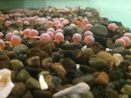
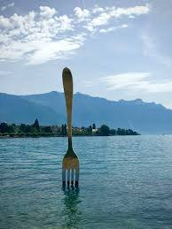

Salmon have an extrordinary life. first, when they hatch, only about 1 percent of eggs actualy live to hatch a salmon. They then start swimming down the rivers to the ocean to eat smaller fish until they can go back upstream to lay eggs. to complete the cycle, you must survive as a salmon going downstream and then back up!
there is a fork in the stream so you need to pick left or right

